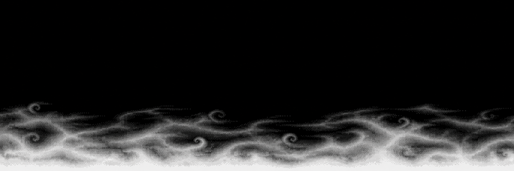
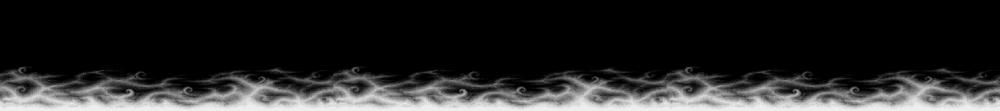
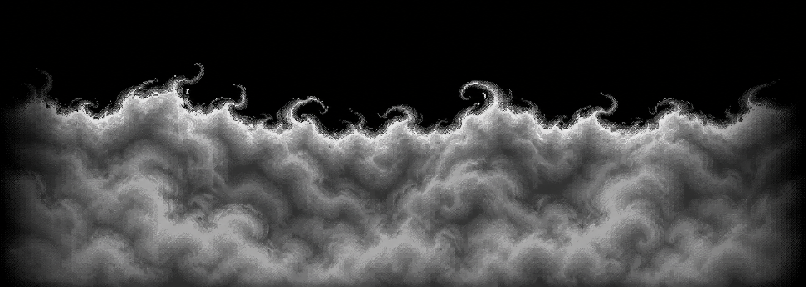
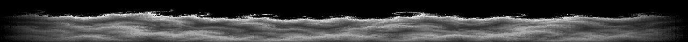
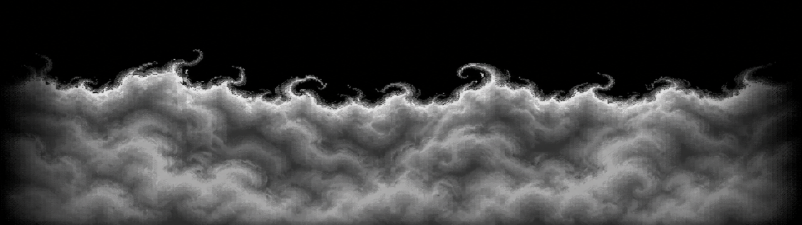

Fontes geradas com imagegen em 15/10/2026. Prompts: ART-PROMPTS-063 r1, com identificação da peça e proporção pretendida. Direção visual das duas fontes v01 aprovada pelo dono em 15/10/2026; conteúdo permanece DRAFT, com preparação técnica pendente e sem admissão em runtime. As prévias abaixo redimensionam as fontes por nearest-neighbor apenas para inspeção; não são assets preparados.
Fonte 2172×724; formato final pretendido 1536×384. Perfil baixo e horizontal. A emenda ainda não é exata: diferença média no canal R entre bordas = 6,61/255, máximo 85. Deve passar por preparação de costura antes de ser admitida.
Fonte original NB01 v01

Fonte 2097×750; formato final pretendido 1280×360. Crista distinta de NB01 e pontas escuras. Algumas volutas entram no quarto superior previsto como vazio: máximo R amostrado 104/255 nessa área. Registrar para preparação/revisão antes da admissão.
Fonte original NB02 v01


Ambas têm pequenos desvios RGB do cinza e preto não uniforme: conversão de luminância e controle do vazio continuam pendentes. Leitura em combate, perigo e avanço em jogo exigem futura admissão e playtest humano. Medições e SHA-256.